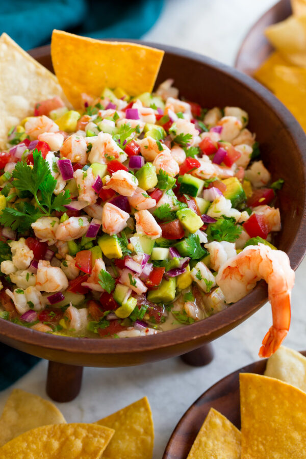

Ceviche

Ingredients
- Shrimp:
medium shrimp diced small
- Limes:3 limes
- Lemons:2 lemons
- Roma tomatoes
you can use other tomatoes if you prefer
- Red onion:Diced small
- Cilantro:Use as much as you like
- Jalapeno:Use to your liking
- Salt and pepper:1 teaspoon of each
- cucumber1 cucumber
- Avocado:Add if you like